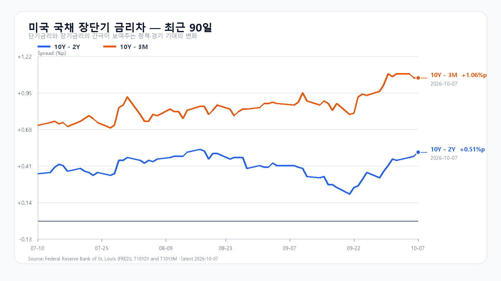
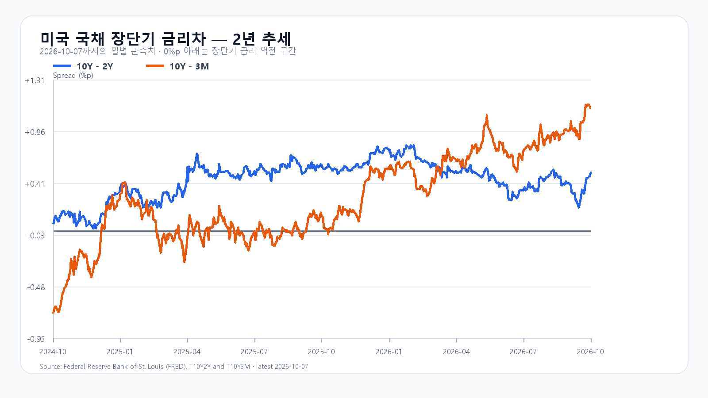

10월 7일 미국 시장은 금리가 다시 중심에 섰다. 9월 FOMC 의사록에서 연준은 인플레이션 상방 위험을 경계했고, 일부 참가자는 에너지 충격과 AI 수요에서 나온 가격 압력이 더 넓게 번지지 않도록 높은 금리가 필요하다고 봤다. 장기금리가 올라가자 QQQ는 0.25%, SOXX는 1.13%, SMH는 1.18% 내렸다.
반도체 전체가 같은 방향으로 움직인 것은 아니다. Micron은 4.06% 반등했고 Broadcom도 0.19% 올랐다. 반면 Nvidia는 0.74%, AMD는 0.55% 하락했다. 메모리 수요의 중기 흐름과 당일 ETF 수급을 같은 신호로 읽으면 안 되는 장면이다.
국내장은 이미 수급 충격을 한 차례 겪었다. KOSPI는 10월 7일 6,803.90으로 1.98% 하락했다. 장중 6,977.77까지 올랐지만 6,803.81까지 밀렸고, 외국인 현물은 2조6,188억원, 프로그램 전체는 1조9,315억원 순매도였다. 삼성전자는 1.10%, SK하이닉스는 3.27% 내렸고 KODEX 레버리지는 4.09% 하락했다.
장전 NXT의 삼성전자 273,000원, SK하이닉스 1,740,000원은 전일 종가보다 각각 1.68%, 0.99% 높다. 이 가격만으로 전일 매도 압력이 끝났다고 보기 어렵다. 정규장에서는 6,800선 회복과 외국인·프로그램 매도 둔화가 먼저 나와야 한다.
기본 시나리오는 KOSPI 6,730~6,860, 확률 50%다. 6,730을 지키고 외국인 순매도가 1조원 아래로 줄어드는 구간이다. 6,860을 넘은 뒤 외국인 현물과 프로그램이 함께 순매수로 돌아서면 6,860 초과~6,990의 강세 범위를 본다. 6,730 아래에서 두 수급이 다시 매도로 기울면 6,580~6,730 미만의 약세 범위가 열린다.
KODEX 레버리지는 107,175원을 1차 지지, 107,230원을 반등 기준, 109,475원을 저항으로 둔다. 대응 점수는 공격 15, 관망 55, 방어 30이다.
| 종가 시나리오 | 범위·확률 | 15시 20분 확인 조건 | 전환 신호 |
|---|---|---|---|
| 강세 | 6,860 초과~6,990 · 20% | 6,860 상회 · 외국인·프로그램 동반 순매수 | 6,860 아래 재진입 |
| 기본 | 6,730~6,860 · 50% | 6,730 이상 · 외국인 순매도 1조원 미만 | 범위 이탈 |
| 약세 | 6,580~6,730 미만 · 30% | 6,730 미만 · 외국인·프로그램 동반 순매도 | 6,730 회복 |

